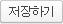

<?php
include_once "../../Libs/_php/rankup_basic.class.php";
$rankup_control->check_admin();

include_once './rankup_mailing.class.php';
$mailing = new rankup_mailing('newsletter');

include_once 'top_menu.inc.php';
?>
<script type="text/javascript"> var direct_board = true; </script>
<script type="text/javascript" src="<?=$wysiwyg_url?>wysiwyg.js"></script>

<form name="save_form" id="save_form" onSubmit="return false">
<input type="hidden" name="kind" value="newsletter" /><!폼종류>
<input type="hidden" name="used" value="yes" /><!사용여부>
<input type="hidden" name="priority" value="3" /><!중요도:(3)보통>
<input type="hidden" name="alarm" value="no" /><!관리자동보발송>
<table width="770" cellpadding="0" cellspacing="0" align="center">
<tr>
	<td><div id="sub_title">뉴스레터 메일폼 설정</div></td>
</tr>
<tr>
	<td>
		<textarea type="editor" name="content" required hname="메일폼 내용" nofocus style="width:100%;height:500px"><?=$mailing->settings['body']?></textarea>
	</td>
</tr>
</table>
</form>

<div style="margin-top:10px;text-align:center">
	<a onClick="$form.submit(this, 'save_form', '설정사항을 저장하시겠습니까?')"></a>
</div>

<script type="text/javascript">
Wysiwyg.createELM();

// $form submit setting
$form.debug = false;
$form.hashes = {mode: 'set_mailing'};
$form.handler = function(trans) {
	if(!trans.responseText.blank()) proc.response(trans);
	else {
		alert('저장되었습니다.');
	}
}
</script>
<br />
<br />

</body>
</html>